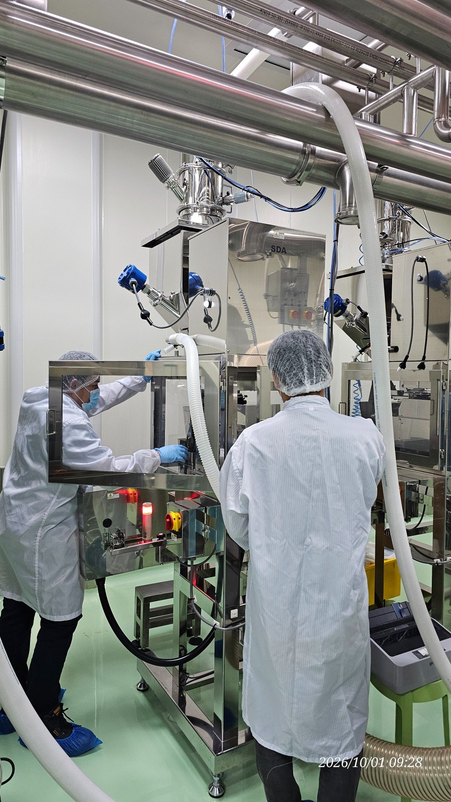
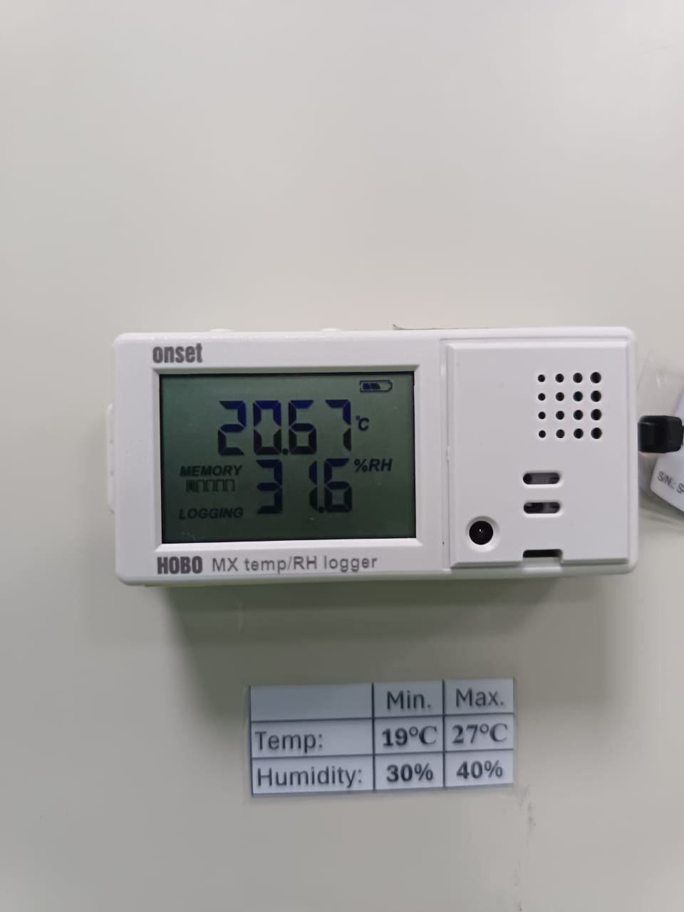
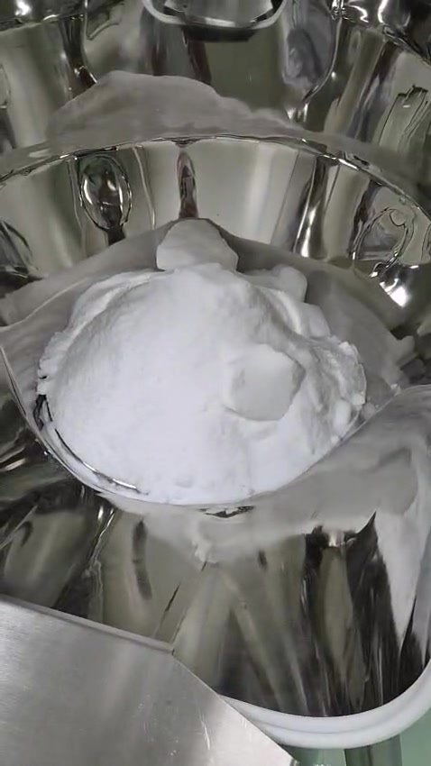
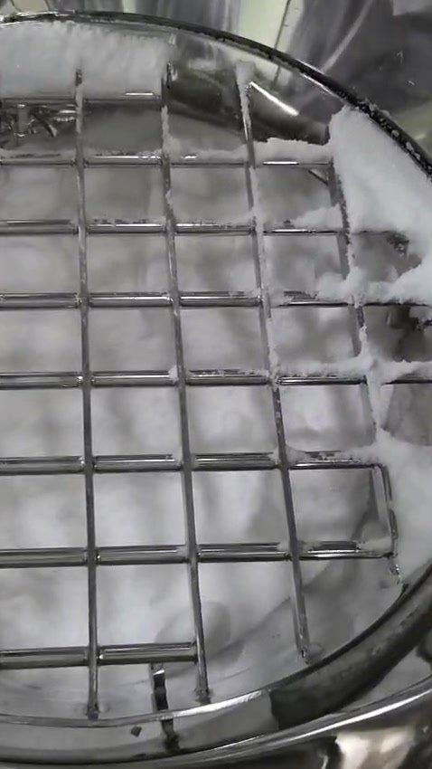
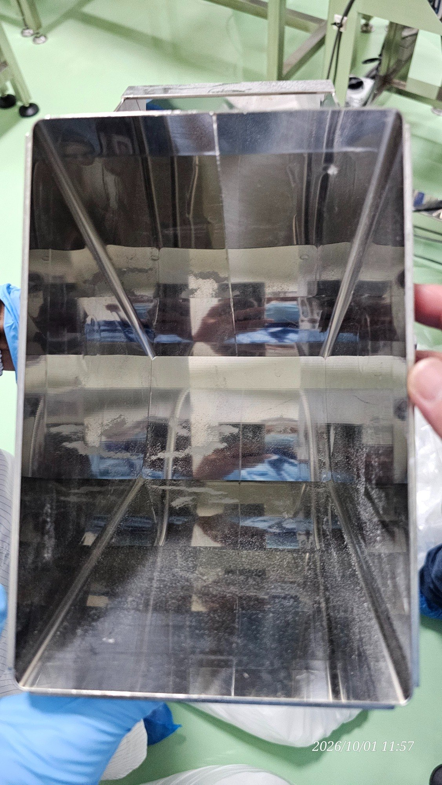

2026/10/01。四個現象是同一件事：有結塊的粉沒有乾淨離開秤斗，所以閘門會堵、壁上會沾，Ishida 秤到的重量沒有全部進袋。

這兩個結果把根因從「儀器」和「房間」移開。後面的重量差要到粉體路徑上去找。

20.67°C
31.6% RH
Unit 5
600 g 校正
| ISSUE | ROOT CAUSE | |
|---|---|---|
| 1 | 前三袋，Ishida 與 MT 重量不一致Ishida 明細是 203.4、200.9、201.1 g。第 1 袋比 200 g 重 3.4 g，是 50 袋裡唯一超過 +2 g 的點。第 2、第 3 袋已回到這一批的正常帶。 | 秤斗裡的粉沒有全部進袋結塊與沾壁讓 Ishida 已經扣掉的重量，和 MT 秤到的袋重之間差一塊殘留。第 1 袋另外帶了啟動時一次掉下的殘料。負荷元測試前合格。MT 的三筆讀值這包資料裡沒有，兩機的差值還算不出來。 |
| 2 | SDA 結塊堵在 cut gate現場處置是把振動時間加長。影片沒有拍到閘門卡住的瞬間，拍到的是閘門上游的秤斗裡已經有硬塊。 | 硬塊在閘口搭橋，原振動時間不夠原料裡的塊不容易過閘，細粉又黏，塊一座住，粉就在開口上搭橋。加長振動可以把這一輪的橋震開，但不會把原料裡的塊清掉。 |
| 3 | 粉沾在 cut gate 與 weight hopper11:57 拆下的落料槽，上半仍是鏡面，中線以下是一整片霧面膜，角落最厚。進料護網的右側網緣也結了一圈粉。 | 黏性細粉被硬塊抹在不鏽鋼上膜一旦形成，下一劑黏的是那層膜，不是乾淨金屬。通道上沒有看到敲擊或氣刀。室濕在規格內且偏乾，這張照片是乾膜，不是房間結露。 |
| 4 | 原料有結塊測試前已完成 Unit 5 / 600 g 校正，以及 200、400、600 g 確認，結果合格。結塊是在這個合格結果之後、粉一進秤斗就看見的。 | 結塊是原料帶進來的，問題從這裡開始硬塊停在秤斗粉面的上方，還沒有到 cut gate。它是問題 1 到 3 的共同起點：塊去堵閘，碎塊去抹壁，殘留去造成兩台秤不一樣。 |
校正與環境停在鏈的外面。它們合格，所以沒有放進這五步。
影片 WA0006。塊在粉面上，形狀完整，不是閘門切出來的。
現場紀錄。原振動時間打不開這座橋。
能把橋震開。同時會把黏粉再抹上一層，也不能取代過篩。
11:57 落料槽下半段，以及護網網緣。留下的就是沒進袋的那一塊重量。
第 1 袋 203.4 g 是啟動殘料。其後 49 袋收斂到 200.98 g。



畫面 CLR 10:44，機器時間 11:38，照片時間 11:27。書面公差這包資料沒有提供，所以這裡只描述對 200 g 的分布，不另下合格判定。
看見了第 1 袋明顯偏重；落料槽與護網有殘留；秤斗粉面有硬塊。
推論Ishida 在放料前就把斗內重量算進這一袋。粉若黏在 cut gate 或斗壁，MT 秤到的袋重就少掉那一塊；下一袋若把殘料一起抖下來，就變成多。第 1 袋 +3.4 g 符合「啟動時積住的料一次掉下」。
推論第 2、第 3 袋若 MT 仍然對不上，比較像固定偏差：空袋皮重不一致，或每一袋都留下一層薄膜。那是和啟動殘料分開的第二個因素。
還缺MT 三筆讀值、空袋皮重、兩台秤是不是秤同一袋。沒有這三項，差值的克數不能寫死。
排除Unit 5 在 600 g 校正過，200 / 400 / 600 g 確認合格。這一顆負荷元不是根因。
改完之後要另跑一輪，用明細重算平均和標準差，確認第 1 袋不再是 203.4 g。
沾的位置有兩處：cut gate 下游的落料槽，以及更上游的護網。秤斗壁在結塊影片裡大部分仍亮，厚膜主要在落料路徑，不在斗的上壁。
這層膜就是 Issue 1 的機制：斗裡秤到的克數，有一部分沒有跟著進袋。
硬塊近景。整段影片在第 7 頁，機器當時是停的。
校正合格這件事要寫進紀錄。它保護了儀器，也把下一輪的行動指到原料準備，而不是再校一次秤。
50 袋合計 10,051.6 g。平均 201.032 g，樣本標準差 0.600 g，中位數 200.95 g，最小 199.4 g（第 6 袋），最大 203.4 g（第 1 袋）。